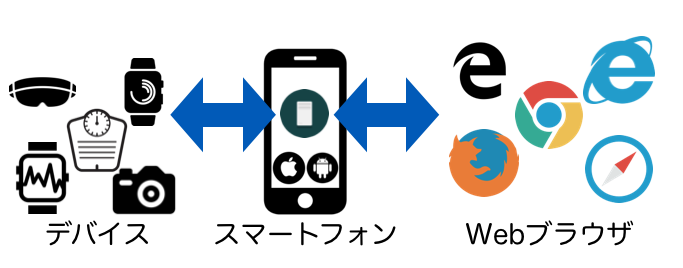

DeviceConnect WebAPIについて
DeviceConnect WebAPIはウェアラブルデバイスをはじめ、様々なガジェットをスマートフォンを介して操作できるWebAPIを提供する技術です。DeviceConnectはスマートフォン上にWeb APIサーバを立てます。そして、そのWeb APIを通じて各種デバイスのデータを送受信できるようになります。
簡単な図にすると次のようになります。

WebブラウザとスマートデバイスをつなぐのがDeviceConnect WebAPIになります。もちろん、WebAPIなのでWebブラウザに限らず各種プログラミング言語から操作することもできるようになります。
主なガジェットとしては、スマートウォッチ、スマートトイ、ライト、赤外線リモコン、グラス、カメラ、Android/Android Wear、血圧計、体重計、歩数計などがあります。詳しくは対応デバイスについて - DeviceConnect Usersを確認してください。
対応環境について
AndroidとiOSで使えます。
SDKについて
- JavaScript
- Android
- iOS
に対応したSDKが提供されています。
プラグインについて
DeviceConnect WebAPIを拡張するプラグインが開発できます。SDKも用意されています。